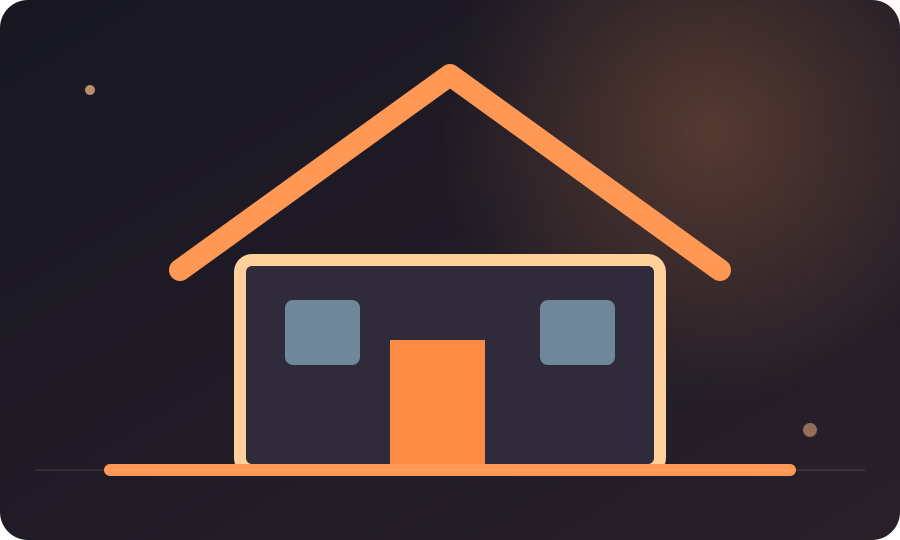

SUPERACIÓN PERSONAL
Cómo reconstruir tu vida después de un cambio inesperado
Un mapa gradual para recuperar estabilidad, reconocer lo que cambió, pedir apoyo y tomar decisiones pequeñas sin exigirte estar bien de inmediato.

RECURSO VISUAL · SUPERACION 6
Cuatro pilares para reconstruir después de un cambio
La reconstrucción puede avanzar en paralelo: proteger lo básico, reconectar, explorar y redefinir.
Seguridad y necesidades inmediatas.
Personas y apoyos disponibles.
Pruebas pequeñas y reversibles.
Una identidad y unos planes en construcción.
Un cambio inesperado puede alterar más que una agenda. Una mudanza, una ruptura, la pérdida de un empleo, una dificultad económica o el cierre de una etapa pueden modificar tus rutinas, relaciones, planes y la imagen que tenías del futuro. En esos momentos, escuchar que debes «volver más fuerte» puede sentirse como otra exigencia. No todas las experiencias necesitan una moraleja inmediata. A veces, el primer avance consiste en recuperar estabilidad y reconocer que algo importante cambió.
No intentes reconstruirlo todo el mismo día
Cuando varias áreas se mueven al mismo tiempo, la mente puede tratar de resolverlas como una sola emergencia. Separarlas ayuda. Haz un inventario de lo que necesita atención inmediata, lo que puede esperar y lo que ya no depende de ti. Esta clasificación no elimina el problema, pero reduce la confusión entre urgencia, preocupación y decisiones que todavía no tienen información suficiente.
Empieza por lo básico que sostiene tu capacidad de decidir: descanso posible, alimentación, seguridad, contacto con alguien de confianza y obligaciones esenciales. Si existe un riesgo inmediato para tu seguridad o la de otra persona, busca ayuda local urgente. Si el malestar persiste o interfiere de forma importante con tu vida, hablar con un profesional puede ser una forma responsable de apoyo.
Reconoce lo que terminó y lo que sigue disponible
Después de una pérdida o un cambio, puedes sentir presión por recuperar exactamente la vida anterior. Algunas cosas quizá puedan restablecerse; otras tendrán que transformarse. Escribe dos listas: «lo que ya no está bajo mi control» y «lo que todavía puedo cuidar o decidir». No uses la segunda para negar la primera. Ambas pueden ser ciertas al mismo tiempo.
La reconstrucción tiene capas
Estabilidad: recuperar rutinas esenciales y atender asuntos urgentes. Claridad: comprender qué cambió y qué decisiones siguen pendientes. Apoyo: identificar personas, servicios y recursos concretos. Exploración: probar opciones nuevas sin exigir que todas funcionen. Consolidación: revisar qué prácticas y relaciones sostienen la etapa que estás construyendo.
Estas capas no son etapas obligatorias ni una línea recta. Puedes volver a una anterior cuando surja un nuevo problema. La secuencia sirve como mapa, no como examen que debas aprobar.
Evita convertir la resiliencia en obligación de aguantar
Ser resiliente no significa aceptar condiciones dañinas, ocultar emociones o resolverlo todo en soledad. Pedir ayuda, establecer límites, descansar y cambiar de plan pueden ser respuestas adaptativas. Tampoco hay un plazo universal para «superar» una experiencia. Comparar tu proceso con el de otra persona suele ignorar diferencias de recursos, contexto y gravedad.
Construye una red concreta, no una lista ideal
En vez de pensar solamente «debería apoyarme en los demás», identifica qué tipo de ayuda necesitas. Tal vez alguien pueda escucharte, acompañarte a una cita, revisar un presupuesto, cuidar una tarea puntual o compartir información confiable. Una petición específica suele ser más fácil de responder que una invitación abierta a resolver toda la situación.
Prueba un paso pequeño con fecha de revisión
Elige una acción que esté bajo tu control y que no te comprometa más de lo que puedes sostener. Por ejemplo: actualizar una hoja de gastos, solicitar información sobre una formación, retomar contacto con una persona o reservar un espacio de descanso. Define cuándo la harás y cuándo revisarás el resultado. No midas el éxito por sentirte bien de inmediato; mide si la acción aportó información, alivio práctico o una conexión útil.
Una historia posible: empezar de nuevo profesionalmente
Imagina que alguien pierde un empleo y siente que debe encontrar inmediatamente otro puesto idéntico. Al revisar la situación descubre que necesita ingresos a corto plazo, pero también puede explorar una formación que amplíe sus opciones. Separa ambas tareas: busca estabilidad primero y reserva una cantidad pequeña de tiempo semanal para investigar. No convierte el cambio en una oportunidad obligatoria ni minimiza la dificultad; crea dos frentes realistas.
Permítete una identidad en construcción
Una etapa difícil puede cambiar cómo te describes. No tienes que elegir enseguida una nueva versión de ti. Puedes hablar en términos de proceso: «estoy aprendiendo a organizarme en estas condiciones», «estoy explorando alternativas» o «todavía no sé qué decisión tomar». La incertidumbre no es una falla moral. Es una condición que puede manejarse con información, apoyo y decisiones graduales.
Revisa con compasión y precisión
Al final de cada semana, anota qué fue más difícil, qué te sostuvo y qué necesita cambiar. Reconoce avances pequeños sin obligarte a sentir gratitud por lo ocurrido. El objetivo no es justificar el cambio ni encontrar una enseñanza perfecta: es construir condiciones para que el siguiente paso sea posible.
MAPA DE RECONSTRUCCIÓN · PLAN PERSONAL
Ordena tu siguiente paso
Selecciona qué necesita atención primero. El ejercicio crea un paso pequeño y una fecha de revisión.
Una idea necesita una acción. Prueba el Reto de 7 días o explora las herramientas de IMPULSO.
← VOLVER A IMPULSO